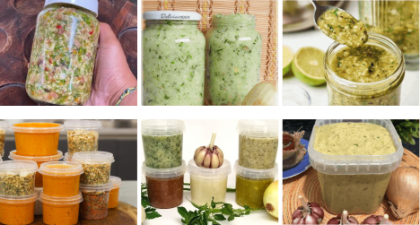

E o melhor de tudo: você pode esses ingredientes ao lado da sua casa em qualquer mercado ou loja de produtos naturais.

HOJE VOCÊ ESTÁ TENDO A CHANCE DE LEVAR TUDO ISSO POR APENAS R$ 19,90
Sem pegadinhas. Pagamento único. Acesso vitalício.
O que você recebe hoje:
Se você prestar atenção, R$19,90 não é um valor aleatório e de fato não é.
R$19,90 é o que você paga por um tempero pronto no mercado. Só que aqui você aprende a fazer 30. Sem desculpa pra adiar.
Mesmo sendo baixo, cobrar já filtra quem não está comprometido. Quem investe por menor que seja o valor age. E quem age, vê resultado.
Sem pegadinhas. Sem letras miúdas. Sem assinatura escondida.
Clique no botão abaixo para garantir seu acesso com
Você pode fechar essa página agora e continuar cozinhando com o mesmo tempero de saquinho de sempre — sem nada de especial, sem elogio, sem diferencial.
Ou pode investir R$19,90 agora — menos do que um único tempero pronto no mercado — e finalmente descobrir as proporções exatas que fazem a família parar tudo e perguntar: "Que tempero é esse, pelo amor de Deus?"
Essa oferta pode sair do ar a qualquer momento.
QUERO RECEBER O GUIA COMPLETO AGORA MESMO